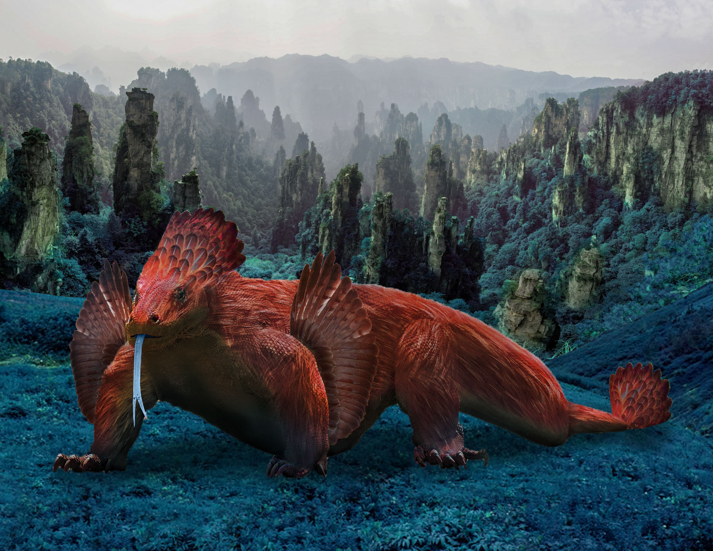

Avian Dragon

Speculative biology is a subject of great interest to me, having to do with the potential forms life might take in the future or on other worlds.
For this piece, I wanted to take one of my favorite animals, a komodo dragon, and place it within an alien environment.
I took inspiration from feathered dinosaurs and decided to give the dragon a lot of avian characteristics.
It is now covered in a layer of red plumage, with wings beside its arms, and a feathery mane adorning its head and tail.
I used real photographs of bird wings and feathers and komodo dragons found from the web to construct this creature.
The environment uses photos of the Tiangxi mountains (famously used in the movie, Avatar) but are colored greenish blue to contrast the red of the animal.
This piece also gave me the opportunity to work in a much more realistic style than the more stylized work I usually do. I wanted the creature to look like it was actually there in that environment to the best of my ability. That meant having to play with blending modes and shading to get the desired effect. The shading, like the shadow underneath the creature, helped especially well in creating that cohesion.